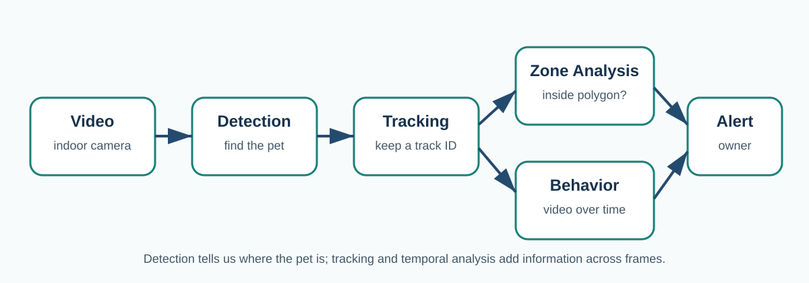

Introduction and Problem Definition
Pet owners cannot always watch their pets when they are away from home. A camera-based system can help by detecting a pet, following its movement, recognizing basic behavior, and warning the owner when the pet enters a place that should be avoided.
This tutorial focuses on dogs as the main case study, while also discussing research on domestic cats where it helps explain multi-animal tracking. The key idea is that a useful monitoring system needs more than object detection. A detector can locate a pet in one frame, but a complete system must also keep the pet's identity across frames, compare its position with a user-defined restricted zone, and use temporal information to recognize behavior.
Region-of-interest intrusion systems show that an object detector can be combined with a defined monitored area to determine whether an object has entered that area.[1] For pet monitoring, the same general idea can be adapted from people or security targets to dogs and cats.

What problem is this tutorial solving?
1. Where is the pet?
Object detection finds a dog or cat and returns a bounding box around it.
2. Is it the same pet?
Object tracking connects detections over time and assigns a persistent track ID.
3. What is the pet doing?
Behavior recognition uses appearance and motion across frames to classify actions such as walking, sitting, running, or lying down.
Restricted-area concept
A restricted area in this tutorial is a virtual polygon drawn over the camera image. It could represent a kitchen counter, a sofa, a doorway, a room entrance, or another place where the owner does not want the pet to remain. The system compares the tracked pet's image coordinates with this polygon. If the pet enters the polygon and stays there longer than a chosen time, the system can create an alert.
Learning objectives
After completing this tutorial, a reader should be able to explain the difference between detection and tracking, describe how a polygon can represent a restricted area, understand why temporal models are useful for behavior recognition, compare several research approaches, and identify common limitations such as poor lighting, occlusion, fast motion, multiple pets, and mobile-device processing limits.